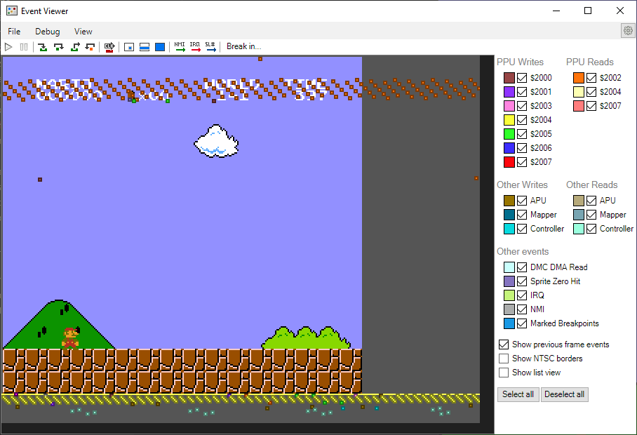

Sprite Zero is a PPU feature of the first sprite in OAM RAM ($00-$03) that allows for timing an event at a specific point in rendering. An example of this is the status bar in Super Mario Bros. - while the level scrolls, the status bar is stationary. This is accomplished with Sprite Zero.
Unlike the IRQ timing with some mappers, Sprite Zero requires contstant polling of PPU Status ($2002). Below is a picture of Mesen's Event Viewer, showing SMB1 polling for a Sprite Zero Hit. The orange events are reads from $2002.
As long as the game starts polling $2002 before the sprite appears, you can run the polling code whenever. You can see that in SMB1, there is some code that runs before, since it takes a consistent amount of time.
In this case, the game modifies the X scroll by writing to PPU Scroll ($2005). You can see that while it does write to $2005 a second time, the Y scroll can't be modified mid-frame
with this register. That is more difficult, and requires writes to PPU Address ($2006).
Detecting a Sprite Zero Hit requires polling PPU Status ($2002), more specifically bit 6.
$2002: PPU Status
VSO. ....
|||+-++++-- Least significant bits previously written into a PPU register
||+-------- Sprite overflow (bugged)
|+--------- Sprite 0 Hit
+---------- vBlank (0: not in vBlank; 1: in vBlank)
Waiting for a sprite zero hit can be done with just two instructions. The BIT instruction copies bit 6 into the overflow flag, so we can repeatedly bit test PPU Status ($2002) and
branch back to the beginning of the loop if the overflow flag is clear.
The Sprite Zero flag is cleared at the end of vBlank, so NMI needs to run until then. If there is nothing to do, a simple loop will work.
:
bit PpuStatus_2002
bvc :-
lda #$20
sta PpuAddress_2006
lda #$00
sta PpuAddress_2006
NMI:
; .. Other NMI Code ..
ldx #0
:
nop
nop
nop
dex
bne :-
This bit in PPU Status ($2002) is enabled when a non-zero pixel of Sprite Zero (a pixel that isn't transparent) overlaps an opaque pixel of the background (a pixel
that isn't the global background color).
This means that wherever you want a Sprite Zero Hit to occur, you need there to be a tile that doesn't contain any background-color pixels where the sprite is. The sprite
also needs to have no transparency (at least where you want the event to take place; the top-left corner makes the most sense). The Sprite Zero Hit does occur
regardless of the background priority bit in the sprite's attributes, however.
Below, using the smiley face sprite from the sprite guide, as well as a background tile with a single pixel, is an example of using a Sprite Zero Hit. This does more
than just SMB1 though, and basically resets scrolling to the top-left corner, except mid-frame. You can see how the "Hello, World!" text is rendered twice.